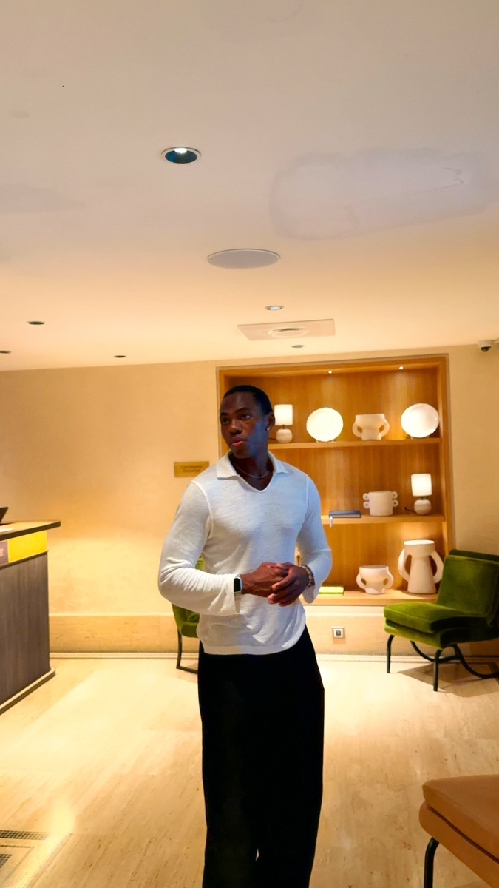

Where I come from
I was born in DR Congo and adopted into an Italian family; I have lived in Italy since 2012. Growing up between cultures, then studying in Europe and the United States, taught me to read a room before speaking in it.
At home, project management and engineering. Outside, football, MMA, kendo, volleyball and wrestling: different rules, the same discipline under pressure.
